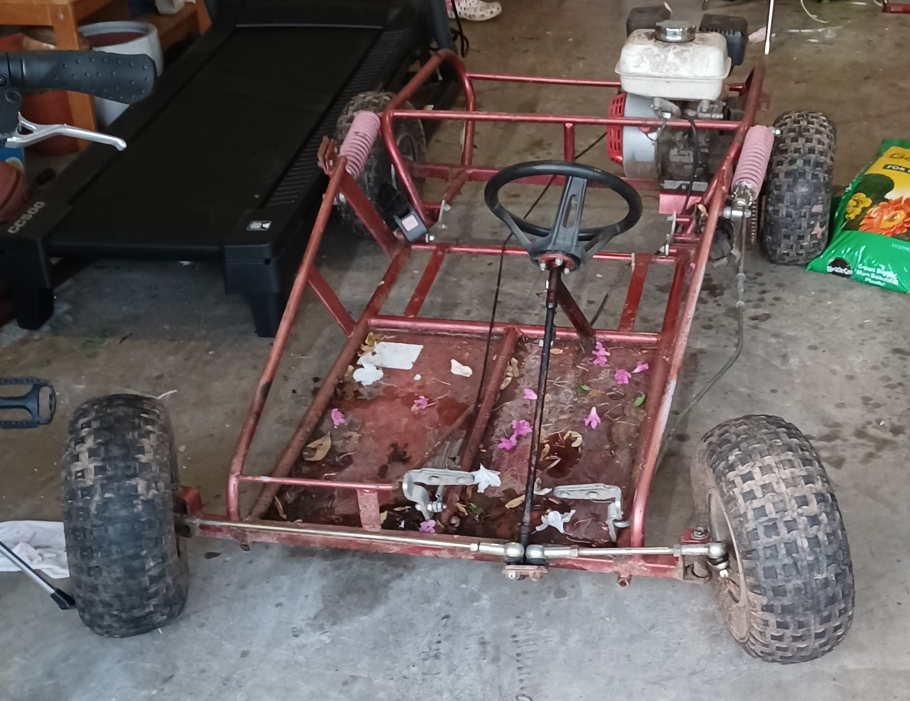
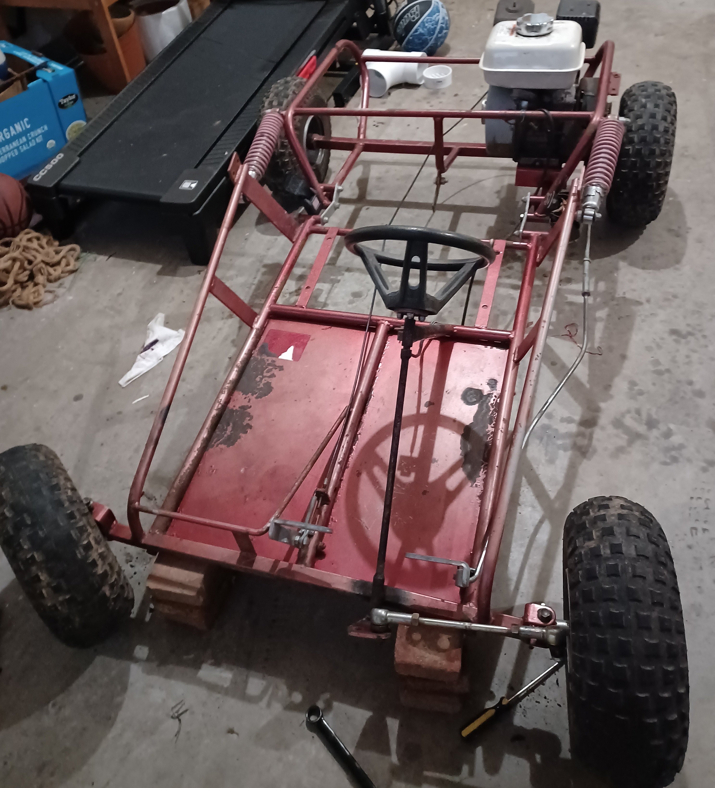
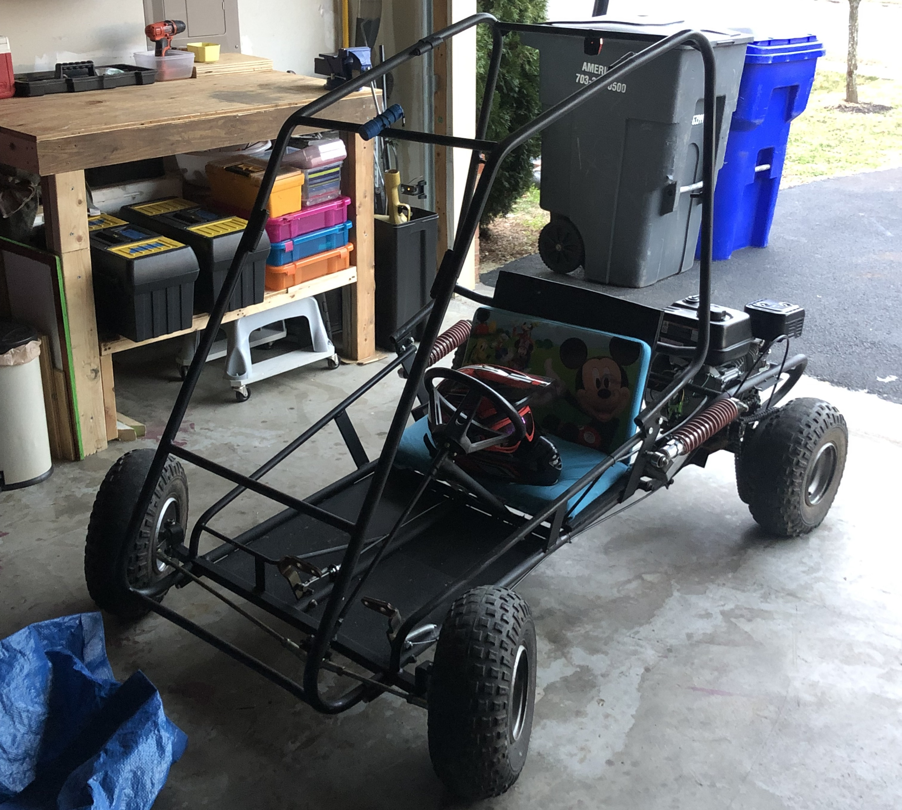
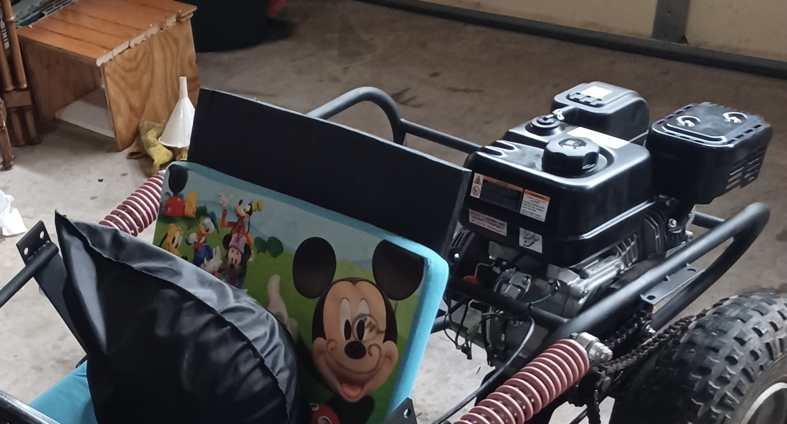
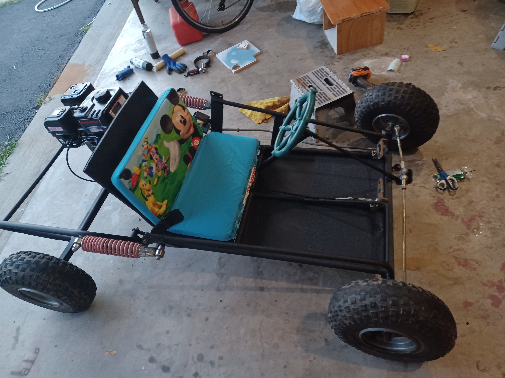

Go-Cart Project
My First Project: Started at my 6th Grade
Before Original Go Cart

Orignial go cart
Bought my first vehical to be built go cart after negotiating with owner

Closer Look of go cart
Heavy colors made this part of the room feel dim.
After Rebuild Go Cart

Repainted and oilng gocart
epainted and oilng gocart

Replaced engine
Tried rebulding the old engine but then decided to replaced with new engine

My Best Go Cart Seat
used my kindergarten sofa as go cart seat as it does not have any seat